Executive Summary
In the wake of shifting economic landscapes, job seekers have become primary targets for sophisticated phishing operations. This report details the methodology used by fraudulent actors to harvest personally identifiable information (PII) and provides a comprehensive guide for identifying these threats. By analyzing domain authenticity, cross-platform inconsistencies, and technical metadata, individuals can effectively insulate themselves from identity theft and extortion attempts.
1. Domain Validation and the Economy of Scams
The first line of defense in vetting a recruiter is the examination of their email domain. Professional organizations invest in custom domains to establish a "rubber stamp" of institutional authority and brand consistency. For a legitimate business, the cost of maintaining a domain is a negligible overhead, but for a scammer, it is a significant friction point. Because scam accounts are frequently flagged and banned, these actors rely on free providers like Gmail or Yahoo to maintain a high volume of outreach at zero cost. A "global recruitment lead" reaching out from a generic personal address is the primary indicator of a low-cost, high-volume fraudulent operation.
Figure 1 demonstrates examples of email addresses from suspicious recruiters using free email services. Notice how these differ from legitimate corporate domains.
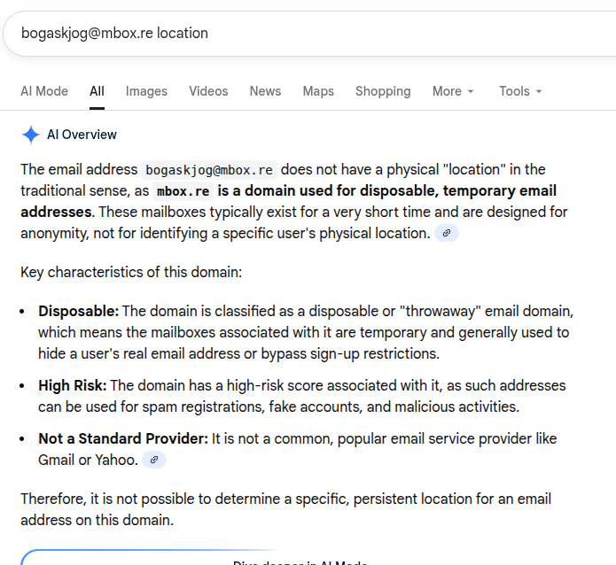Figure 1: Comparison between an official corporate domain and a generic free-tier email address used in a scam.
2. Cross-Platform Discrepancies and "Sloppy" Execution
Scammers often leverage the public nature of LinkedIn to scrape real names and professional titles, creating a veneer of legitimacy. However, their execution frequently suffers from critical inconsistencies. In one specific case study, a scammer operating under the name "Terry Jeff Snodgrass" provided a link to a profile that did not match the sender's persona. While the name provided was masculine, the associated LinkedIn profile belonged to a female professional in a different region. This mismatch suggests that scammers are managing hundreds of identities simultaneously and often lose track of the specific personas they are projecting to individual targets.
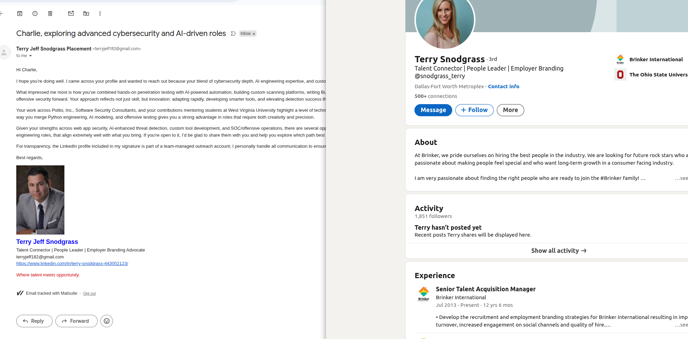Figure 2: Identifying discrepancies between claimed identity and verified professional profiles. The email signature shows a male image, while the LinkedIn profile clearly belongs to a female professional.
What to Do When You Find Impersonation
Do not feel intimidated to reach out and converse with the individual being impersonated. They are probably aware of scammers using their likeness to commit fraud. Many professionals appreciate being notified when their identity is being used in scams, as it helps them take action to protect their reputation and warn others.
3. Social Media Presence and "Ghost" Profiles
A genuine recruiter's success depends on visibility and networking; therefore, they typically maintain a "data-rich" social media presence characterized by years of activity, endorsements, and mutual connections. Fraudulent profiles, by contrast, are often "ghosts" created within days of the initial contact. These profiles usually lack a personalized URL, have no professional history, and utilize the default "grey silhouette" avatar. Furthermore, these actors often employ high-pressure communication styles, demanding immediate action to prevent the victim from having the time to conduct the due diligence outlined in this report.
In one case, a recruiter's email bounced back as undeliverable, indicating the account was quickly deleted after initial contact:
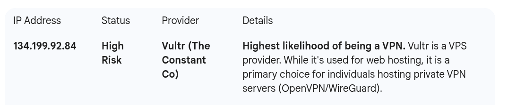Figure 3: Mail delivery failure indicating the email address no longer exists - a common pattern with disposable scam accounts.
4. Advanced Investigation: The Power of Reverse Image Search
Visual assets provided by recruiters—such as profile pictures or company banners—offer a wealth of information when subjected to a reverse image search. By using tools like Google Lens, we can trace the origin of an image across the web. During our investigation, an image of a purported real estate agent named "Robert" was found to be a widely used stock photo appearing on various unrelated websites, including a legal firm in Switzerland and a property group in Miami. This widespread, contradictory usage confirms the identity as a fabricated asset intended to build unearned trust.
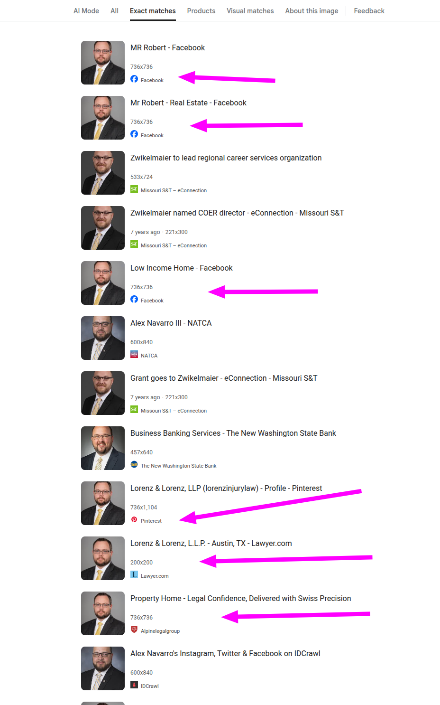Figure 4: Using Google Lens to expose the use of stock photography in fraudulent personas. The same image appears across multiple unrelated profiles and websites.
Figure 5: Additional reverse image search results demonstrating how scammers reuse the same images across different fake identities.
Another investigation revealed a profile picture being used on adult content sites and retail websites, further confirming it was stolen or generated content:
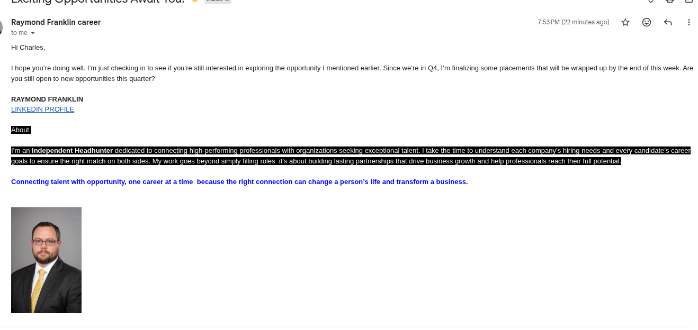Figure 6: Profile images found on unrelated websites, indicating stolen or stock photography used in fraudulent profiles.
5. Identifying the "Information Harvest"
The ultimate goal of these interactions is almost always the collection of sensitive data under the guise of "pre-employment screening." It is critical to understand that legitimate hiring processes do not require a Social Security Number (SSN), exact Date of Birth, or banking details during the initial outreach or interview phase. Scammers often request these details alongside "expected salary rates" to make the request seem like a standard HR procedure. Any request for PII before a face-to-face (or video) interview and a formal, verifiable offer letter should be treated as an attempt at identity theft.
Figure 7-9 demonstrate examples of phishing forms designed to harvest sensitive personal information:
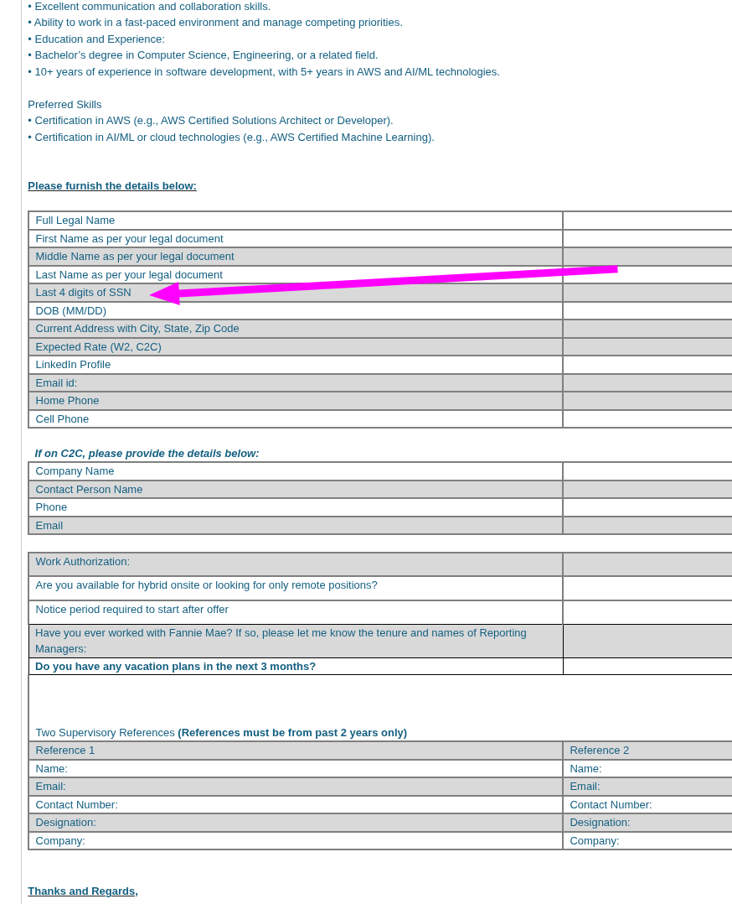Figure 7: Example of a phishing form requesting sensitive information including SSN digits, full legal name, and address.
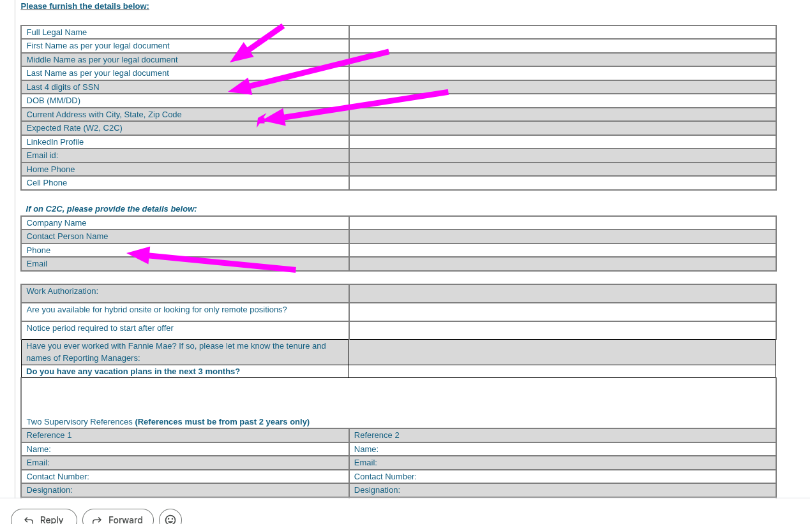Figure 8: Continuation of the phishing form showing requests for contact information, work authorization details, and references.
Figure 9: Complete view of the information harvest form. Notice the request for "Last 4 digits of SSN" - a common tactic to make the request seem less invasive while still collecting valuable identity theft data.
6. Technical Forensics: AI Generation and Disposable Domains
As technology evolves, scammers have begun using AI to generate human faces that do not exist in reality, effectively bypassing traditional reverse image searches. Tools like "Sightengine" can analyze these images for "Face Manipulation" or "Stable Diffusion" artifacts. In my analysis, a profile image was flagged with a 99% probability of being AI-generated, showing clear signs of GAN (Generative Adversarial Network) architecture.
Figure 10: Technical analysis of a profile picture revealing AI-generated artifacts. The image shows 99% probability of being AI-generated using Stable Diffusion.
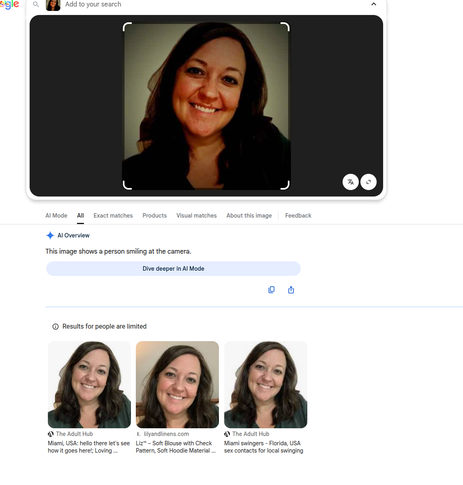Figure 11: Detailed AI detection analysis showing the specific model used (Stable Diffusion at 98% confidence) and other technical indicators.
Additionally, the use of disposable domains like @mbox.re serves as a major red flag. By performing a WHOIS lookup, we can often see that these domains were registered mere days before the scam campaign began, confirming their status as "throwaway" infrastructure.
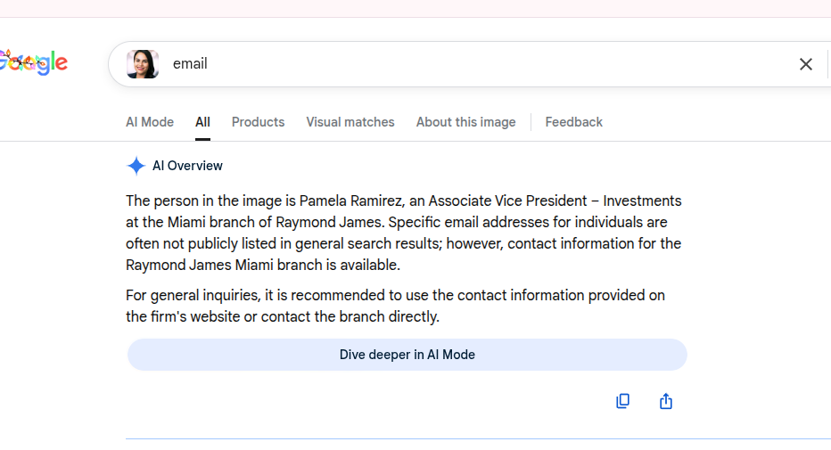Figure 12: Research on disposable email domains. The domain @mbox.re is identified as a high-risk disposable email service used for temporary, anonymous addresses.
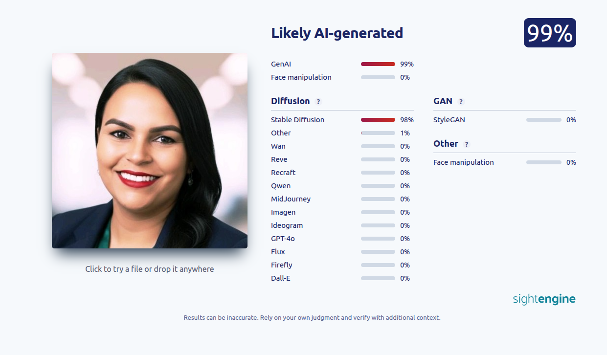Figure 13: Further analysis of disposable email domains showing their classification as temporary, high-risk addresses used for spam and malicious activities.
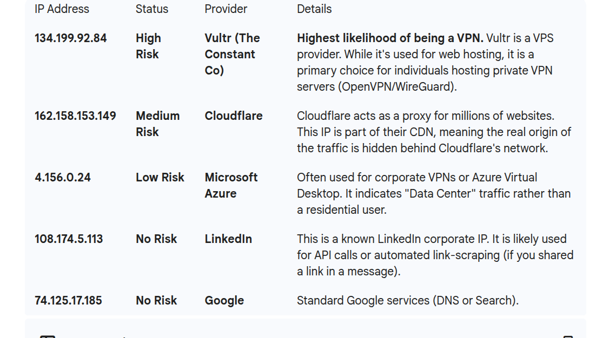Figure 14: IP address analysis revealing the use of VPNs, proxies, and data center IPs - common indicators of scammer infrastructure designed to hide true location.
Conclusion
Vulnerability in the job market is the scammer's greatest asset. By replacing urgency with investigation, job seekers can flip the script on these actors. The combination of domain verification, image forensics, and a strict refusal to share PII before an offer is finalized creates a robust defense against even the most sophisticated modern recruitment scams.
- Always verify email domains - legitimate companies use custom domains, not free email services
- Cross-reference LinkedIn profiles and social media for consistency
- Use reverse image search to verify profile pictures
- Never provide SSN, full DOB, or banking information before a formal offer
- Be suspicious of high-pressure tactics and urgent requests
- Use AI detection tools to identify generated profile images
- Research disposable domains and check IP addresses for VPN/proxy usage